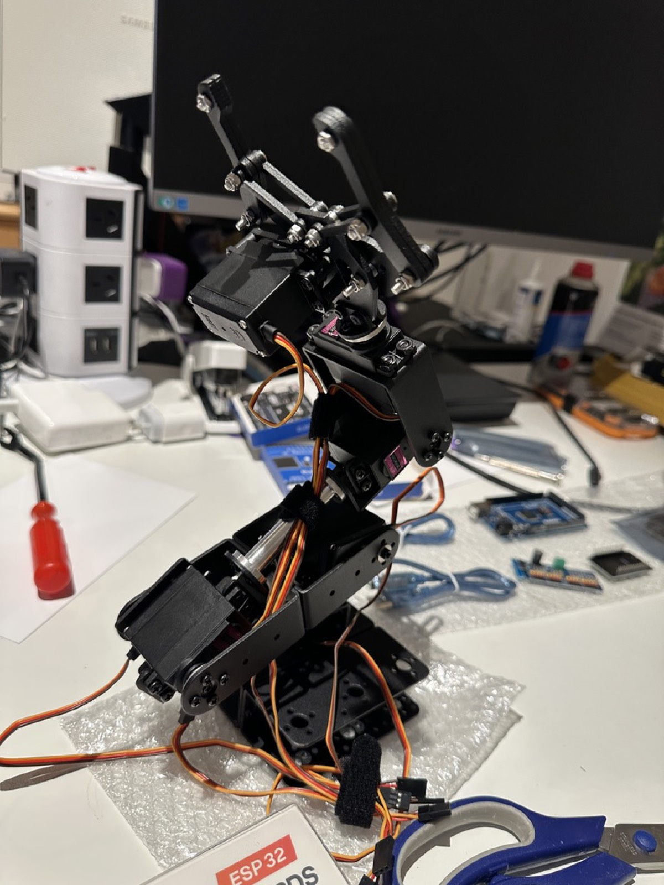

6DOF Robot Arm¶
A hand-built six-degree-of-freedom robot arm, controlled over WiFi as a first-class ROS2 node. An Elegoo ESP32 runs micro-ROS firmware and drives six MG996R servos through a PCA9685 PWM board; a Docker host (Mac now, Raspberry Pi later) runs the micro-ROS agent and a Foxglove bridge for browser-based control.

Features¶
- ROS2-native from day one — the ESP32 registers as a real ROS2 node
(
arm_controller) over WiFi using XRCE-DDS; no custom protocol, no bridge code. - Standard messages only —
sensor_msgs/JointStatein and out, so MoveIt, Strands-Robots, and any ROS2 tool can drive the arm without translation. - Smooth motion — a trapezoidal-velocity trajectory engine interpolates every joint at 50Hz; new targets replan from the current position (no snapping).
- Safe by default — software joint limits clamp every command, servos stay idle until the first valid command (no lurch on boot), and if the agent link drops for more than 2 seconds the arm holds position instead of going limp.
- Browser control UI — Foxglove with a shipped layout: joint command publish panels and live joint-state plots. Zero UI code on the microcontroller.
- Portable host — one
docker-compose.ymlruns identically on macOS and Raspberry Pi; migration means changing a single IP address in firmware config. - Documented and reproducible — this site covers the architecture, parts list, install guide, design decisions, and 3D-printed mounts.
Architecture at a glance¶
Browser (Foxglove UI)
│ WebSocket :8765
Docker host (ROS2 Jazzy): micro-ROS Agent + Foxglove Bridge
│ WiFi (XRCE-DDS over UDP :8888)
ESP32 (micro-ROS node "arm_controller", trajectory engine, watchdog)
│ I2C @ 3.3V
PCA9685 PWM driver ── 6× MG996R servos (6V/10A converter power)
See Architecture for the full diagram, ROS2 topic table, and firmware module breakdown.
Getting started¶
The install guide follows the actual bring-up sequence:
- Hardware — wiring and power rules.
- Firmware — Arduino IDE, libraries, config, flash.
- Host software — Docker, micro-ROS agent, Foxglove.
- First motion — smoke tests, single-servo sweep, calibration, full-arm power-up.
Roadmap (not built yet)¶
These are explicitly phase 2 — the current system does not include them:
- Inverse kinematics / MoveIt integration.
- Camera-based perception (phase 1 only plumbs a webcam for calibration).
- Strands-Robots integration.
- Custom web UI beyond Foxglove (rosbridge + static page, if ever wanted).
- True joint position feedback — the MG996R has none, so the arm reports commanded angles (see Design Decisions).